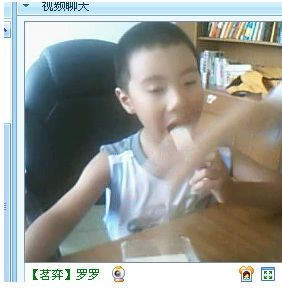

-------戴先生
-------戴先生我爱上了五朵金花，嘿，别怪我花心，请听我一一道来。
其实我的金花都是男生，第一位不用我说大家想必都已猜到，当然是戴先生。但前段时间，我因颈椎病疼痛，时常忍不住的发脾气。一次我正恼火得狠的时候，戴先生却不停地在号上给我发消息，全是些跳舞，调皮的图片。我一怒之下对他说：“以后不要再找我说话，我们也不要交往了！"说完我就下线了。
后来几天，我也有想他，但很快就被别的事一扫而过，我也一直没看到他了，而我继续一边忍受颈椎的疼痛一边上会网，下会棋。
那天，突然看到他了，茗弈失落的乒乓球，正坐在那里孤单而安静的下棋，令我心一下跳了起来的是他的游戏心语：我爱干妈小刀。顿时感到鼻子酸酸的，我的心都快碎了。儿子长大了，我的眼泪流了下来，有脖子的疼痛，有对儿子的愧疚，有深深地感动，也有无尽的自责。
我的轩儿，他慢慢成熟懂事了。
［ 烟淡水云间 于 2010-4-14 13:48:05 时花20金币送鲜花一朵］
［ 五子痴 于 2010-4-16 18:49:56 时花20金币送鲜花一朵］
［ 茗奕的飞猪 于 2010-4-21 16:53:01 时花20金币送鲜花一朵］
干妈好，上次我不知道您脖子疼，一时兴起发的。爸爸说，脖子疼要少打电脑多运动，睡觉时是垫高脖子，让它得到充分休息。祝您磁疗早点发挥作用。-------戴先生
［ 茗弈宽容 于 2010-4-16 18:38:48 时花20金币送鲜花一朵］
［ 五子痴 于 2010-4-16 18:48:25 时奖励此帖[金币加 20 威望加1］
谢谢宝贝，真幸福！